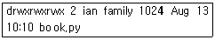
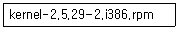
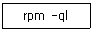
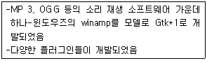
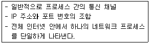
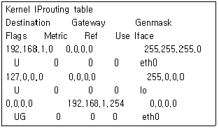

리눅스마스터-2급 (2010-03-13 기출문제)
1과목: 리눅스 운영 및 관리
1. 다음에서 설명하는 내용 중 틀린 것은?
- 리눅스는 장치 파일을 일반 파일과 똑같은 하나의 파일 개념으로 본다.
- 리눅스에서 파일명은 공백이나 필드 분리자를 포함할 수 없다.
- /var 디렉토리에는 일반적으로 각종 시스템의 설정 파일이 저장된다.
- /usr/local 디렉토리에는 일반적으로 사용자가 외부에서 가져왔거나 개발한 프로그램이 설치된다.
(정답률: 53%)

2. umask의 사용법에 대한 설명으로 틀린 것은?
- 단순히 umask만 치면 현재의 사용자 파일 생성 매스크값이 표시된다.
- umask 값은 일반적으로 0022이다.
- umask 값이 0022인 경우 별도로 지정하지 않았다면 새로 생성되는 텍스트 파일은 0644 실행파일은 0755의 파일 권한을 갖게 된다.
- 파일의 실제 권한은 사용자가 파일 생성시 요청하는 권한에 대해 설정된 매스크 값과 XOR하여 생성된다.
(정답률: 52%)
3. 다음은 ls -l 명령을 수행했을 때 결과 화면이다. 가장 왼쪽에 파일의 속성을 나타내는 문자로 사용될 수 있는 것에 대한 설명으로 틀린 것은?

- d 는 디렉토리를 의미한다.
- -는 일반 파일을 의미한다.
- b 는 블록 디바이스를 의미한다.
- l 은 논리 디바이스를 의미한다.
(정답률: 66%)
4. chsh 명령에 대한 설명 중 틀린 것은?
- 사용자가 사용하고 있는 로그인 쉘을 바꾸는 명령이다.
- 많이 사용하는 쉘들로는 Bash, Bourne Shell, Korn Shell, C Shell 등이 있다.
- 사용 가능한 쉘들은 /etc/shells에 나열되어 있다.
- 루트계정에서도 chsh를 입력하고 패스워드를 입력해야로그인 쉘이 바뀐다.
(정답률: 75%)
5. 다음 중 파일 접근권한을 바꿀 때 사용하는 명령어는 무엇인가?
- ls
- umask
- chmod
- chgrp
(정답률: 84%)
6. 파일 시스템을 유지보수하는 fsck명령에 대한 설명 중 틀린 것은?
- 루트 파일 시스템을 점검하려면 별도의 루트 파일 시스템이 들어 있는 디스크가 필요 없이 점검하 려는 현시스템의 루트 파일 시스템에서 fsck명령 실행 가능하다.
- fsck명령은 하나의 바이너리실행파일이라기보다는 특정 파일 시스템에 대해 여러 명령을 실행하도록 되어 있는 프론트엔드(front-end)이다.
- -t 옵션으로 점검할 파일 시스템의 유형을 지정할 수 있다.
- fsck가 점검후 파일 시스템에 변경이 있었다면재부팅해야 한다.
(정답률: 40%)
7. 다음 파일 시스템에 대한 설명 중 틀린 것은
- hpfs-HP에서 개발된 파일 시스템으로 현재는 읽기 전용으로 사용된다.
- xiafs - Minix의 제한들을 보완한 수정 버전이나 많이 사용되지는 않는다.
- ext3 - ext2의 확장된 버전으로 저널링 기능이 추가되었다.
- minix - Minix 운영체제에서 사용되던 파일 시스템으로 대부분의 부팅디스크는 Minix 파일 시스템으로 구성되어 있다.
(정답률: 35%)
8. 특별한 종류의 디스크 블록으로 파일 이름, 소유주, 권한, 시간, 디스크에서의 위치에 대한 정보를담고 있는 것을 무엇이라 하는가?
- superblock
- inode
- directory
- file table
(정답률: 71%)
9. du 명령에서 파일이나 디렉토리가 차지하고 있는 용량을 바이트(byte) 단위로 보고자 할 때 사용하는 방법으로 알맞은 것은?
- du는 바이트 단위로 표시할 수 없으므로 ls -l을 이용해야 한다.
- - b 또는--bytes 옵션을 주면 된다. 즉 du -b이다.
- df명령을 사용한다.
- -l 또는--long 옵션을 치면 된다. 즉 du -l이다.
(정답률: 66%)
10. mkfs 명령에 대한 설명으로 알맞은 것은?
- 파일 시스템 관리를 위해 필요한 마킹을 해주는 유틸리티이다.
- make 프로그램의 단점들을 개선한 유틸리티이다.
- 파일 시스템의 생성 및 표준화를 위한 유틸리티이다.
- 기본적으로 배포되는 리눅스에 mkfs라는 명령은 없다.
(정답률: 74%)
11. 프로세스의 생성에 대한 설명 중 알맞지 않은 것은?
- 프로세스는 프로그램이 메모리 안에 적재되어 활동중인 것을 말한다.
- 특정 프로세스가 fork 함수를 실행하면 메모리에 그 프로세스와 같은 자식 프로세스 하나가 더 생긴다.
- 프로세스들 간의 부모 / 자식 관계로 이루어진 계층 구조는 pstree 명령으로 알아볼 수 있다.
- exec는 fork와 달리 자신과 다른 프로세스를 새로 생성할 수 있다.
(정답률: 63%)
12. 다음 중 kernel 이후 실행되는 최초의 프로세스는 무엇인가?
- swapd
- df
- init
- cron
(정답률: 83%)
13. 다음 중 suspend된 것을 foreground로 실행하기 위한 방법으로 알맞은 것은?
- fg %<작업번호>
- bg %<작업번호>
- Ctrl+z
- Ctrl+s
(정답률: 84%)
14. 실행중인 프로세스에게 종료 신호를 보낼 수 있는 명령으로 알맞은 것은?
- signal
- kill
- nice
- cron
(정답률: 75%)
15. 현재 시스템에 httpd라는 이름으로 프로세스가 활동하고 있는지 알아볼 수 있는 가장 적합한 방법은 무엇인가?
- 웹브라우저를 띄운 후 http://127.1/을 쳐서 응답을 하는지 확인한다.
- ps aux | grep httpd 명령으로 ps 결과 중 httpd 가 있는지 확인한다.
- httpd 명령을 쳐본다. 만일 “이미 수행중”과 같은 메시지가 나온다면 이미 실행중인 것이다.
- telnet 127.1 80을 쳐서 80번포트에 대해 웹서버가 응답하는지 본다.
(정답률: 74%)
16. 좀 비프로세스에 대한 설명으로 알맞는 것은?
- 부모 프로세스의 잘못 보다는 좀비 프로세스 스스로의 내부적인 문제로 발생하는 경우가 더 많다.
- 부모 프로세스가 갑자기 종료된 프로세스들을 좀 비프로세스라고 부르며 이들은 init 프로세스가 부모가 된다.
- 좀비 프로세스들은 ps 명령으로 프로세스들을 살펴보았을 때 STAT 컬럼이 좀비를 의미하는 “J”로 표현된다.
- 실행을 마쳐서 메모리와 자원들을 시스템에 돌려주었으나 프로세스테이블에 자신의 정보가 남아 있는 프로세스이다.
(정답률: 64%)
17. 프로세스의 우선순위를 변경하는 프로그램에 대한 설명 중 틀린 것은?
- nice는 우선순위에 대해 조정 수치를 설정할 수 있게 해준다.
- renice는 이미 실행되고 있는 프로세스의 우선순위를 변경할 수 있게 해준다.
- 기본적으로 아무런 옵션 없이 nice를 사용하면 상속받은 현재 순서의 우선권을 출력한다.
- 옵션으로 조정 수치를 줄 때 수치가 높을수록 높은 우선순위를 갖게 된다.
(정답률: 76%)
18. 정기적으로 명령이나 프로세스를 스케줄할 때 사용하는 프로그램으로 알맞은 것은?
- alarm
- ls
- cron
- at
(정답률: 76%)
19. ps 명령 실행결과 확인 가능한 내용과 그에 대한 설명이 알맞게 짝지어지지 않은 것은?
- PID(Parent ID) - 부모 프로세스의 ID
- PGID(Parent Group ID) - 사용자 부모 프로세스의 그룹 ID
- COMMAND(COMMAND) - 사용자가 실행한 명령어
- SHRD(SHaReD)-프로세스가 사용하고 있는 공유 메모리
(정답률: 48%)
20. 프로세스수, 데몬, 사용자 등 CPU에 대한 정보를 실시간으로 보여주는 명령어는 무엇인가?
- top
- ps
- cron
- kill
(정답률: 75%)
21. 다음 중dircolors 명령과 관련된 내용 중 틀린 것은?
- ls 명령의 출력 색상을 조정할 수 있다.
- 현재 설정된 색상 정보는 -a옵션을 통해 알 수 있다.
- 환경변수 LS_COLORS를 설정한다.
- GNU coreutils의 한 구성요소이다.
(정답률: 40%)
22. bash 쉘 상에서 ls -al 명령어에 대한 alias를 ll로 설정하는 명령어로 알맞은 것은?
- alias ll='ls -al'
- alias $ll= alias' ls -al'
- a lias $ll=ls -al
- alias ll= aliasls -al
(정답률: 74%)
23. 다음 중 리눅스 상쉘의 종류가 아닌 것은?
- tar
- zsh
- ksh
- bash
(정답률: 81%)
24. 현재 시스템에서 사용 가능한 쉘의 목록을 확인하고자 할 때 사용할 수 있는 명령어와 옵션으로 알맞은 것은?
- ssh -X
- ksh -i
- chsh -l
- dash -o
(정답률: 78%)
25. 쉘에서 입력하는 제어문자로 현재 실행중인 프로세스를 일시 중단시키는 키조합은 무엇인가?
- CTRL- U
- CTRL-M
- CTRL-X
- CTRL-Z
(정답률: 79%)
26. bash와 연동하여 입력 모드를 emacs 혹은 vi모드로 변경할 수 있도록 설정하는 파일은 무엇인가?
- .bash_history
- .inputrc
- .gtkrc
- .emacs
(정답률: 43%)
27. 사용자가 시작하는 위치인 홈 디렉토리를 설정하는 본쉘(Bourne Shell)의 변수는?
- HOME
- SHELL
- PWD
- PATH
(정답률: 58%)
28. Bash쉘에서 설정되어 있는 PATH 환경변수에 ‘/usr/bin’이라는 새로운 값을 추가하기 위한 명령으로 알맞은 것은?
- export PATH=/usr/bin
- PATH=/usr/bin
- export $PATH=$PATH:/usr/bin
- PATH=$PATH:/usr/bin
(정답률: 60%)
29. 다음 중 콘솔기반의 에디터가 아닌 것은?
- JEdit
- pico
- vi
- nano
(정답률: 74%)
30. 다음 중vi실행 시 읽기 전용모드로 실행하는 명령은 무엇인가?
- vi -r
- vi -R
- vi -e
- vi -E
(정답률: 60%)
31. 다음 vi의 명령 모드에서 키 조합중 한 단어를 지우기 위한 조합은 무엇인가?
- XX
- yy
- dw
- cc
(정답률: 58%)
32. 다음 중vi명령인 :wq! 에 대한 설명으로 가장 알맞은 것은?
- ex모드에서 파일을 쓰는 명령이다.
- 강제로 파일을 저장하고 에디터를 종료한다.
- vi를 종료하면서 별도의 쉘을 실행한다.
- 파일이 저장될 디렉토리를 지정하기 위해 사용한다.
(정답률: 86%)
33. 다음 vi명령 모드에서 키입력을 나열한 것 중 성격이 다른 하나는 무엇인가?
- i
- h
- j
- k
(정답률: 64%)
34. 다음 에디터중 확장성에 중점을 두고 개발된 에디터로 특정한 모드가 없이 동작하지만 확장 기능을 통해 최적의 에디팅 환경을 제공하는 것은 무엇인가?
- pico
- nano
- vi
- emacs
(정답률: 56%)
35. 다음 중rpm 패키지의 용도가 아닌 것은?
- 파일 자동 설치
- 업그레이드 기능
- 시스템 검증
- 타 패키지(yum 등)와의 성능 비교
(정답률: 75%)
36. 다음rpm 패키지 이름에서 패키지의 버전을 나타내는 것은?

- kernel
- 2.5.29
- i386
- rpm
(정답률: 83%)
37. rpm을 사용하는 시스템에서 httpd가 설치되었는지 확인하는 명령으로 알맞은 것은?
- rpm -iv httpd
- rpm -e httpd
- rpm -qa | grep httpd
- rpm -Uvh| grep httpd
(정답률: 73%)
38. 다음의 명령과 동일한 역할을 하는 패키지 관리도구는 무엇인가?

- dpkg -L
- dpkg -l
- dpkg -S
- dpkg -s
(정답률: 37%)
39. 다음 중 디렉토리를 하나의 압축파일로 묶기 위한 명령이 아닌 것은?
- tar zcvf file.tar.gz directory
- tar cvf - directory | gzip > file.tar.gz
- gzip -d directory file.gz
- zip -r directory file.zip
(정답률: 43%)
40. rpm 패키지의 파일들이 이상 없이 제대로 설치되었는지를 검증할 때 사용하는 옵션은?
- -T
- -F
- -V
- -Q
(정답률: 50%)
41. 다음 중 압축 유틸리티와 해당압축파일의 확장자가 틀리게 연결된 것은?
- zip - .zip
- compress - .c
- gzip - .gz
- bzip2 - .bz2
(정답률: 70%)
42. 다음중 뛰어난 압축률을 가지고 있으며 tar 명령어와 조합하여 사용하는 경우 j 옵션을 통해서 사용 가능한 압축 유틸리티는 무엇인가?
- gzip
- bzip2
- compress
- cpio
(정답률: 62%)
43. 모듈을 현재 실행중인 커널 안에 삽입하는 명령과, 커널이 현재 사용중인 모듈을 보기 위한 명령을 순서대로 나열한 것은?
- addmod, viewmod
- addmod, lsmod
- insmod, viewmod
- insmod, lsmod
(정답률: 42%)
44. 다음 중 일반적으로 리눅스에서 프린터가 설치될 위치를 지칭하는 용어가 아닌 것은 무엇인가?
- PCMCIA
- JetDirect
- SMB
- Local
(정답률: 50%)
45. 다음 중 프린터를 설정하는 유틸리티가 아닌 것은?
- printtool
- printconf
- startx
- linuxconf
(정답률: 73%)
46. 커널 사운드 드라이버의 유형에 포함되지 않는 것은?
- OSS
- EISA
- ALSA
- 업체 제공
(정답률: 52%)
47. 다음 중 텍스트 포맷을 프린터 출력을 위해서 변환하는 명령은 무엇인가?
- tr
- pr
- lpr
- tbl
(정답률: 35%)
48. 프린터 큐에 있는 인쇄 작업을 취소하고자 할 경우 사용하는 명령어로 알맞은 것은?
- l pr
- lpc
- lpd
- lprm
(정답률: 67%)
2과목: 리눅스 활용
49. 다음 중 X 윈도우의 특징이 아닌 것은?
- 네트워크 기반의 그래픽 환경이다.
- 사용자가 원하는 모양의 인터페이스를 만들 수 있다.
- 디스플레이 장치에 의존적이다.
- 그래픽 환경에 필요한 자원들이 특정한 형태로 정의되지 있지 않다.
(정답률: 51%)
50. 다음 중 Xlib의 상위 라이브러리인 X toolkit에 해당하는 것이 아닌 것은?
- XView
- Motif
- GTK
- KDE
(정답률: 40%)
51. 가상 터미널을 사용하여 X 윈도우를 2개 실행한 경우 첫 번째에서 두 번째 X 윈도우로 전환하고자 할 때 사용하는 키조합으로 알맞은 것은?
- [Ctrl] + [Alt] + [F1]
- [Ctrl] + [Alt] + [F2]
- [Ctrl] + [Alt] + [F6]
- [Ctrl] + [Alt] + [F8]
(정답률: 31%)
52. 다음 중 XF86Setup, Xconfigurator, system-config-display 등 X 윈도우 설정도구를 통해 공통적으로 설정하거나 직접 수정이 가능한 X 윈도우즈 설정 파일의 절대 경로는 어느 것인가?
- /etc/X11/xorg.conf
- /etc/xorg.conf
- /etc/Xorg/X.conf
- /etc/X11/Xdisplay.conf
(정답률: 41%)
53. 리눅스 실행 환경을 부팅 시 지정하여 텍스트 모드 또는 X윈도우 모드로 사용할 수 있도록 설정하는 시스템 설정 파일은 무엇인가?
- /etc/profile
- /etc/bootmode
- /etc/modetab
- /etc/inittab
(정답률: 67%)
54. 다음 중 KDE(the KDesktop Environment)의 구성요소가 아닌 것은?
- 패널(pannel)
- 아이콘(icon)
- 테스크바(taskbar)
- 데스크톱(desktop)
(정답률: 48%)
55. 다음 중 Konqueror가 지원하는 편리한 파일 관리 기능이 아닌 것은?
- 파일이나 폴더 열기
- 드래그 앤 드롭
- 터미널편집
- 파일의 속성 설정
(정답률: 55%)
56. 다음 설명에 해당하는 리눅스 멀티미디어 프로그램은 무엇인가?

- Media Player
- XMMS
- Real player
- GIMP
(정답률: 49%)
57. 근거리 통신망인 LAN을 토폴로지(topology)에 의한 분류로 구분한 것이 아닌 것은?
- Linear topology LAN
- Star topology LAN
- Bus topology LAN
- Mesh topology LAN
(정답률: 64%)
58. 다음 중 프로토콜 표준을 제정하는 기관과 그 기관에 대한 설명이 잘못된 것은?
- ISO - OSI 참조 모델과 OSI 프로토콜에 관련된 업무를 담당
- ANSI - 미국내 표준들을 조정
- EIA - 국내외 IT 최신 기술 및 표준연구, 표준화에 관한 업무추진
- IEEE - LAN의 접속 규격과 처리에 대한 표준을 지정
(정답률: 56%)
59. TCP/IP 프로토콜의 내부 계층과 해당 프로토콜이 잘못 짝지어진 것은?(오류 신고가 접수된 문제입니다. 반드시 정답과 해설을 확인하시기 바랍니다.)
- 응용계층 : telnet, FTP
- 전송계층 : TCP, IP, 직렬
- 인터넷 : ICMP, ARP
- 네트워크 : 이더넷, 토큰링, FDDI
(정답률: 47%)
60. 다음 중 IP v4 주소체계에서 십진 표기법으로 C클래스서브넷마스크에 해당하는 것은?
- 255.0.0.0
- 255.255.0.0
- 255.255.255.0
- 255.255.255.255
(정답률: 85%)
61. 다음 중 몇 개의 비트가 네트워크를 식별하는데 사용되고 호스트를 식별하는데 사용되는지를 나타내는 것은?
- IP 주소
- 서브넷마스크
- 게이트웨이 주소
- DNS 주소
(정답률: 55%)
62. 하나의 C클래스 네트워크를 4개의 서브 네트워크로 구성할 경우 서브넷마스크 값은 어느 것인가?
- 255.255.255.0
- 255.255.255.128
- 255.255.255.192
- 255.255.255.224
(정답률: 55%)
63. 다음에서 설명하는 내용으로 알맞는 것은?

- 프로토콜
- 소켓
- 세션
- 패킷
(정답률: 44%)
64. 다음 중 OSI7 계층의 Application 계층에 해당하지 않는 것은 무엇인가?
- FTP(File Transfer Protocol)
- HTTP(Hyper Text Transfer Protocol)
- ICMP(Internet Control Message Protocol)
- SMTP(Simple Mail Transfer Protocol)
(정답률: 61%)
65. 메일서비스를 사용하기 위해서 적용되는 인터넷 전송 규약이 아닌 것은?
- SMTP(Simple Mail Transfer Protocol)
- POP(Post Office Protocol)
- IMAP(Internet Message Access Protocol)
- ICMP(Internet Control Message Protocol)
(정답률: 68%)
66. telnet의 경우 보안에 취약하여 이를 보완하기 위하여 대체 사용되는 프로그램으로 알맞은 것은?
- ssh
- rsh
- tsh
- stelnet
(정답률: 78%)
67. 리눅스에서 사용되어지는 대표적인 브라우저가 아닌 것은?
- 컹 커러(Konqueror)
- 모질라(Mozilla)
- 썬더 버드(Thunderbird)
- 오페라(Opera)
(정답률: 54%)
68. 다음 중 텍스 트FTP 클라이언트 프로그램이 아닌 것은?
- ncftp
- gftp
- lukemftp
- lftp
(정답률: 42%)
69. 여러 개의 파일을 한번에 다운로드하려고 할 때 사용할 수 있는 ftp 명령어는?
- mget
- get
- mput
- put
(정답률: 71%)
70. 다음 중 NFS에 대한 설명으로 가장 적절한 것은?
- 리눅스와 윈도우즈 시스템간에 파일과 디렉토리를 공유하기 위한 서비스이다.
- 리눅스와 유닉스 계열의 시스템간에 파일과 디렉토리를 공유하기 위한 서비스이다.
- 리눅스와 윈도우즈 시스템간에 시간을 공유하기 위한 서비스이다.
- 리눅스와 유닉스 계열의 시스템간에 시간을 공유하기 위한 서비스이다.
(정답률: 54%)
71. 다음 중 인터넷 서비스와 해당하는 서비스포트 번호(well-known)가 잘못 짝지어진 것은?
- 파일전송(FTP) - 21
- 보안원격제어(SSH) - 22
- 도메인네임(DNS) - 53
- 전자메일(POP3) - 25
(정답률: 55%)
72. 다음 중 ftp 서버에 접속하여 여러 개의 파일을 다운로드할 경우 파일마다 다운로드 여부를 확인하지 않도록 설정할 수 있는 명령어는?
- put
- ascii
- hash
- prompt
(정답률: 43%)
73. 리눅스에서 사용 가능한 서비스와 서비스포트 번호가 정의된 시스템 설정 파일은 무엇인가?
- /etc/protocols
- /etc/services
- /dev/protocols
- /dev/services
(정답률: 71%)
74. 다음 중 첫 번째이더넷 카드의 IP 주소를 변경하고자 할 때 설정해야 하는 파일은 무엇인가?
- /etc/hosts
- /etc/resolv.conf
- /etc/sysconfig/network
- /etc/sys config/network-scripts/ifcfg-eth0
(정답률: 62%)
75. 다음 중 로컬 DNS 서버의 주소를 변경하기 위해서 설정해야 하는 파일은 무엇인가?
- /etc/host.conf
- /etc/sysconfig/network
- /etc/sys config/network-scripts/ifcfg-eth0
- /etc/resolv.conf
(정답률: 56%)
76. 다음과 같이 현재 적용되어 있는 routing table을 확인하고자 할 때 사용하는 route 명령어의 옵션은 무엇인가?

- -r
- -n
- -t
- -a
(정답률: 25%)
77. 임베 디드시스템에 있어서 리눅스의 장점이 아닌 것은?
- Open Source, Open Architecture이다.
- 대규모 프레임워크 단위로만 설계되어 있다.
- Real Time 운영을 지원한다.
- POSIX를 지원한다.
(정답률: 70%)
78. 클러스터시스템은 HA(High Availavility), Load balancing, HPC(High Performance Computing)로 구분된다. 이 중 리눅스 기반의 HPC 시스템에 해당하는 것은?
- LVS
- LRP
- Beowolf
- Graywolf
(정답률: 59%)
79. 리눅스 클러스터의 특징으로 틀린 것은?
- 오픈소스인 리눅스 운영체제는 사용자가 직접 필요에 맞게 클러스터 제작 가능
- Intel CPU와 특정 device만을 지원하기 때문에 클러스터 개념이 쉽게 여러 가지 형태로 구현 가능
- 대량 생산되는 PC와 network 장비로 인한 저렴한 비용
- 클러스터의 각운영체제로 리눅스를 사용하는 클러스터
(정답률: 53%)
80. Green IT기술 중 하나인 가상화(Virtualization)는 물리적으로 한정된 시스템을 논리적으로 여러 개로 분할하여 사용할 수 있는 기술이다. 리눅스에서 사용 가능한 서버가 상화 SW가 아닌 것은?
- Xen
- KVM
- VMware
- Vengine
(정답률: 50%)